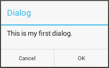

A dialog is a small window that does not fill the screen and is normally used for modal events that require users to take an action before they can proceed (see below).

It is most often used to get a confirmation from a user by prompting the user to make a decision or enter additional information.
An alert dialog window can be created using the
AlertDialog.Builder class, and since Android 3.2
(API level 13) the show method of the
AlertDialog.Builder or the Dialog classes
can be used to display a dialog.
AlertDialog.Builder builder = new AlertDialog.Builder(context); builder.setTitle("Dialog") .setMessage("This is my first dialog.") .setPositiveButton("OK", new DialogInterface.OnClickListener() { public void onClick(DialogInterface dialog, int which) { Log.d("Dialog", "OK button clicked!"); } }) .setNegativeButton("Cancel", new DialogInterface.OnClickListener() { public void onClick(DialogInterface dialog, int which) { Log.d("Dialog", "Cancel button clicked!"); } }) .show();or
AlertDialog.Builder builder = ... AlertDialog dialog = builder.create(); dialog.show();
The context argument to the builder constructor provides a reference
to the application, e.g., parent or the container of a UI component.
An activity is a context, as the Activityclass is an
indirect subclass of the Context class.
The getBaseContext method of an activity can be
used to get its base context, especially in a nested or inner class.
setContentView method of the dialog
to attach its custom UI, e.g.,
Dialog dialog = new Dialog(context); dialog.setContentView(R.layout.my_custom_dialog); dialog.setTile("Custom Dialog"); ... dialog.show();